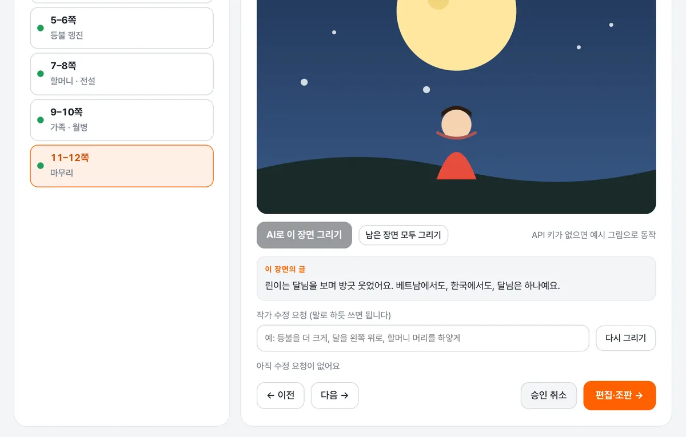

이주여성 작가·강사가 자기 그림책으로 학교 수업을 준비하도록 돕는 AI 그림책 제작·강의 연습 서비스입니다.
녹화를 받아 적고, 학년 눈높이부터 문화 요소 전달까지 여섯 가지로 봅니다. 잘한 순간과 고칠 순간, 다음 연습 목표를 함께 드려요.
원고를 펼침면으로 나누고, 작가님 그림체와 주인공을 기준으로 장면을 그립니다. 원고에 실제로 있는 문장만 근거로 교육과정 태그를 붙여요.

강의와 출판이 곧 일자리인 작가·강사에게서 시작해, 교실의 아이들까지 이어집니다.
책을 더 빨리 완성하고, 학년에 맞는 수업을 미리 연습해 ‘책으로 하는 수업’을 맡습니다.
강의는 리포트만 확인하고, 편집은 교정과 최종 승인만 합니다.
교육과정 주제와 학년에 맞는 다문화 수업을 받습니다.
엄마 나라의 이야기를 수업으로 만나고, 집에 가서 그 문화를 이야기합니다.
키는 이 브라우저의 localStorage에만 저장되고 서버로 보내지 않습니다. 요청은 브라우저에서 api.openai.com으로 직접 갑니다. 공용 컴퓨터에서는 쓰고 나서 ‘키 지우기’를 눌러 주세요. 대략적인 비용: 장면 그림 한 장 수 원~수십 원(gpt-image-1-mini low), 강의 받아쓰기 1분에 약 8원(whisper-1), 평가 한 번 수십 원 이하.
강사 연습실
예시 강사 · 베트남 출신 · 『달님은 하나예요』 작가 · 기록은 이 브라우저에만 저장돼요
점수 추이 · 코치가 확인한 회차는 코치 점수
끝나면 알려 드려요.
3회차 · 오늘 · 『달님은 하나예요』 초등 저학년 20분 12초
말 빠르기가 많이 좋아졌어요. 이번엔 전설 설명 길이와 마무리만 잡으면 80점대입니다.
항목별 점수 · ▶ 근거 듣기 · 줄을 누르면 기준 기준표 초안 · 10/29 대표님 확인
이번 수업의 교육과정 기준
책 속 문화 요소 · 전해졌나요
강의 타임라인 · 동그라미를 누르면 그 순간을 들려드려요
말 빠르기 (분당 어절)
발음 주의 단어 · 누르면 또박또박 발음을 들려줘요
베트남어 화자가 자주 흐리는 받침(ㄹ, ㅇ)과 ㅎ 약화 위주로 찾았어요. 틀린 게 아니라 아이들이 알아듣기 쉽게 하는 연습입니다.
수업 흐름 체크 (도입 → 전개 → 정리)
다음 연습 목표
노란 줄은 음성 인식 신뢰도가 낮았던 구간입니다. 발음이 흐렸거나 잡음·겹친 말일 수 있어요.
원고에 실제로 있는 문장만 근거로 뽑아요. 작가님이 확인한 목록이 이 책의 문화 요소가 됩니다.
확정한 문화 요소는 여기에 쓰여요
작가님 그림체가 먼저예요. 책 전체에 한 번만 정합니다.
② 그림이 없으면 스타일 고르기
주인공 정하기
주인공 기준 그림
고른 시안이 기준 그림이 되어 모든 장면이 이 그림을 참고해 그려집니다. 설명을 바꿔 새로 만들 수도 있어요.
말로 고쳐 달라고 하고, 마음에 들면 승인해요. 승인하면 다음 장면으로 넘어가요.
0 / 6 장면 승인
이 장면의 글
11월 예정 장면별 문화 표현 확인 · 옷·음식·건물·소품이 그 나라와 맞는지 작가가 체크
그림과 두 언어 글을 펼침면에 배치해요. 오른쪽에서 글 위치와 크기를 고칠 수 있어요.
글 배치 고치기
AI 배치글 위치
글자 크기
편집 담당자 검토
11월 예정원고에 실제로 있는 문장만 근거로 써요. 작가님이 확인하면 확정됩니다.
작가가 확인한 문화 요소
| 학년군 | 이 책으로 하는 수업 | 활동 예 |
|---|
이 책의 교육과정 태그
이 태그가 강의 연습의 평가 기준이 돼요.
공통 기준 · 10/19 정리
근거: 교육부 고시 제2022-33호 [별책 2] 초등학교 교육과정. 다문화 교육은 범교과 학습 주제 10개 중 하나입니다. 월별 공통 주제 9개를 두고 같은 주제를 학년군 수준에 맞게 다룹니다. 방학(1·2·8월)은 빼고, 실제 일정은 학교마다 조정합니다.
바른·슬기로운·즐거운 생활 · 경험·탐색·놀이·표현 중심
지역의 삶의 모습, 문화 다양성 · 관찰·비교·조사 중심
세계 여러 나라, 지구촌 문제 · 자료 분석·토의·문제 해결 중심
연계 교과는 중·고학년 기준입니다. 저학년은 통합교과(바른·슬기로운·즐거운 생활)와 국어로 연계합니다. 보조 연계: 국어(이야기 이해·표현) · 도덕(존중·배려) · 예술(전통문화 체험) · 과학(자연환경과 생활).
강의 평가 기준표
근거: 커리큘럼 운영안의 학년군 구분, 방문교사 수업 흐름(독서 확인 → 질문 → 표현 활동 → 정리), 누리과정 교사용 지침서. 리포트의 기준 문장과 AI 평가 지시문이 이 표 하나에서 나와요.
유치원(5~7세)은 저학년 기준을 더 쉽게 봅니다(짧은 문장, 노래·손유희로 주의 모으기, 충분히 기다리기). 성인(도서관 강연)은 공통 기준만 봅니다.
연계 성취기준 (교육과정 원문)
책을 커리큘럼에 맞추는 방법
아시안허브 코치 (대표님 또는 교육 담당)
강사가 보낸 리포트를 보고 항목마다 동의하거나 점수를 조정해요. 확인한 점수가 강사의 성장 기록에 쓰이고, AI와 코치의 차이가 평가 기준을 고치는 자료가 됩니다.
확인할 리포트
AI–코치 점수 차이 · 기준 보정 자료
검토 시간 측정 · 11월 예정기획 · v3.1 (10/25)
영상이나 콘텐츠를 대신 만들어 주는 서비스가 아니라, 작가가 자기 책으로 직접 하는 수업을 키우는 서비스예요. 대표님이 정한 순서대로 1순위 강의 연습, 2순위 그림책 제작입니다.
| 강의 연습 1회 분석 (20분) | 약 200원 · 받아쓰기 1분 약 8원 + 평가 수십 원 |
| 그림책 1권 그림 | 수백~수천 원 · 장면 한 장 수 원~수십 원 |
| 비교 · 9월 영상 실험 | 1분 영상 한 편 약 1만 원 |
학기 지원 30만 원(서버 포함) 안에서 충분해요. 학기 뒤에도 기관이 감당할 수 있는 구조를 목표로 합니다.
11월 예정 장면별 문화 표현 확인 · 편집 담당자 검토 · 인쇄용/리포트 PDF · 제작 기록 · 코치 검토 시간 측정